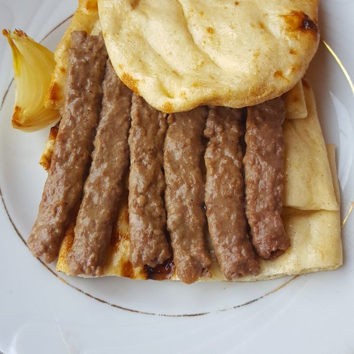

Burdur Şiş
Köfte yapmanın bize göre standart bir denklemi vardır, yöreye veya bölge çeşidine göre içindeki baharatlar veya hazırlanış şekilleri değişiklikler gösterse de köfte, bayat ekmek içi –veya galeta unu, yumurta ve rendelenmiş soğan ile yapılır. Burdur şişin köftesini diğer köftelerden ayıran ise yalnızca et ile yapılmasıdır.
19. yüzyılın başında, Burdur şiş ilk defa yapılmaya başladığında keçi etinden yapılan kıyma ile yapılıyormuş, şimdi ise taze hazırlanmış, kaburga etinden yapılan dana kıyması ile servis ediliyor. Burdur şiş, özel yapılmış pidesi ve közlenmiş yeşil biber ile servis edilir, gittiğiniz lokantalarda yanına bir de bol limonlu yeşil salata ikram ederler.
Bahçeli veya mangal yapmaya uygun bir evde yaşıyorsanız, Burdur şişleri kesinlikle kömür ateşinde yapmanızı öneriyoruz, kömür ateşi ve yüksek ısılı bir mangal varsa, hiçbir şeyin kötü gitme ihtimali olamaz. Eğer çoğumuz gibi apartmanda yaşıyorsanız, veya benim gibi mangalın başında durmaktan hoşlanmıyorsanız, fırını önce tüm fırını ısıtacak şekilde 200-220 dereceye ayarlayın, fırın ısındıktan sonra Burdur şişleri koyun, içleri piştikten –yani yaklaşık 10 dakika sonra, fırının ızgarasını açın ve şişlerin üzerini kızartın.
Et yemeden doyamıyorum, spor yaptım protein almalıyım diyenler için birebir, Burdur şiş yapmak için mutfağa geçelim!
Malzemeler
1,5 kilo (kg)
kaburga dana kıyma
1,5 yemek kaşığı
tuz
2 adet
domates
2 adet
kuru soğan
10 adet
yeşil biber
yapılışı
1.
Kıymanın içine tuz ekleyin ve iyice yoğurun.
2.
Yoğrulan kıymayı 20 dakika kadar dinlendirin.
3.
Dinlenen kıymayı şişlere dizin ve mangalda pişirin.
4.
Domates, soğan ve biberler de şişlere geçirilip mangal ateşinde közleyin. En son pideleri de köftelerin üzerine bastırarak veya direk mangalın üzerine koyup, çok hafif kızartın.
5.
Şişler piştikten sonra pideler ile beraber servis edebilirsiniz.
